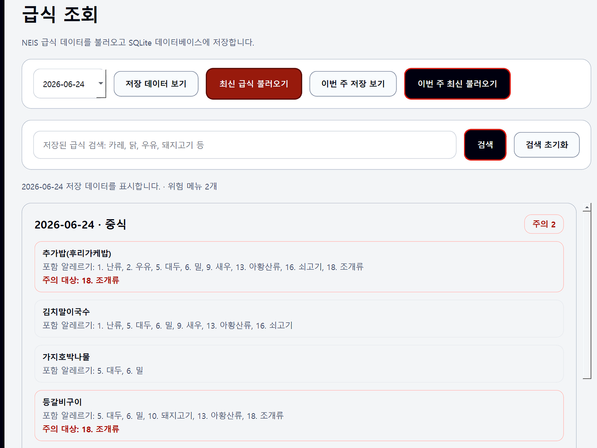

/ Development Project · In Development
SMC Meal Guard
세명컴퓨터고등학교 급식 데이터를 조회하고, 사용자별 알레르기 정보와 비교해 위험 메뉴를 표시하는 Windows 데스크톱 프로그램입니다.
Project Stack
01 · Overview
프로젝트 개요
SMC Meal Guard는 세명컴퓨터고등학교 학생을 위한 급식 알레르기 위험 알림 프로그램입니다. 사용자가 자신의 알레르기 정보를 등록하면, NEIS 급식 API에서 불러온 급식 메뉴의 알레르기 번호와 비교해 주의가 필요한 메뉴를 표시합니다.
프로그램은 단순 급식 조회에 그치지 않고 회원가입/로그인, 계정별 알레르기 저장, 급식 데이터 로컬 캐시, 저장된 급식 검색, 주간 급식 조회, 영양 목표 관리, 다이어트/증량 리스트 관리, 관리자 사용자 관리 기능까지 포함하도록 구현했습니다.
02 · Features
주요 기능
- 회원가입 및 로그인
- PBKDF2-HMAC-SHA256 기반 비밀번호 해시 저장
- 계정별 알레르기 정보 등록/수정
- NEIS 급식 API를 이용한 날짜별 급식 조회
- 선택 날짜 기준 월~금 주간 급식 조회
- 저장된 급식 데이터 검색 및 로컬 캐시 다시 보기
- 등록 알레르기 기준 위험 메뉴 강조 표시
- 회원별 영양 목표, 다이어트 리스트, 증량 리스트 관리
- 관리자 계정 사용자 관리, 비밀번호 재설정, 사용자 삭제
03 · Architecture
구현 구조
Auth Page
회원가입과 로그인을 처리하고, 사용자별 알레르기·식단 데이터를 불러오는 진입 화면입니다.
Allergy Profile
19가지 알레르기 유발 식품 중 사용자가 해당 항목을 선택하고 계정별로 저장합니다.
NEIS Meal Layer
NEIS 급식 API에서 급식 데이터를 가져오고 SQLite 데이터베이스에 캐시로 저장합니다.
Risk Matching Logic
급식 메뉴명에서 알레르기 번호를 추출한 뒤 사용자 알레르기 목록과 교집합을 계산합니다.
Dashboard & Meal View
대시보드와 급식 조회 화면에서 위험 메뉴 수, 영양 요약, 메뉴별 주의 대상을 보여줍니다.
04 · Build Log
어떤 방식으로 만들었는가
프로그램은 Python과 PySide6를 사용해 Windows 데스크톱 GUI로 구현했습니다. 화면은 로그인, 온보딩, 대시보드, 급식 조회, 식단 관리, 알레르기 등록, 계정 설정, 사용자 관리로 나누었고, 각 화면은 사이드바 메뉴를 통해 이동할 수 있도록 구성했습니다.
급식 데이터는 NEIS 급식 API에서 가져오며, 메뉴명에 포함된 알레르기 번호를 정규표현식으로 추출합니다. 추출한 번호와 사용자가 저장한 알레르기 번호를 비교하여 겹치는 항목이 있으면 해당 메뉴를 주의 대상으로 표시합니다. 조회한 급식 정보는 SQLite에 저장되어 다시 보기와 검색 기능에 사용됩니다.
Screenshot Area

CLICK IMAGE TO ZOOM
05 · Result
결과 및 배운 점
이 프로젝트는 단순한 CRUD 프로그램이 아니라, 공공 급식 데이터와 개인 알레르기 정보를 결합해 실제 학교생활 문제를 해결하는 프로그램입니다. 사용자는 자신의 알레르기 정보만 등록하면 날짜별 급식에서 주의해야 할 메뉴를 빠르게 확인할 수 있습니다.
06 · Next Step
개선 계획
- iPhone에서도 사용할 수 있도록 웹앱 또는 iOS 앱 버전 개발
- 위험 메뉴가 있는 날 푸시 알림 기능 추가
- 월별 급식 영양 정보와 위험 메뉴 통계 기능 추가
- NEIS 인증키 암호화 저장 및 비밀번호 정책 강화
- 사용자 목표와 알레르기 정보를 반영한 AI 식단 추천 기능 추가